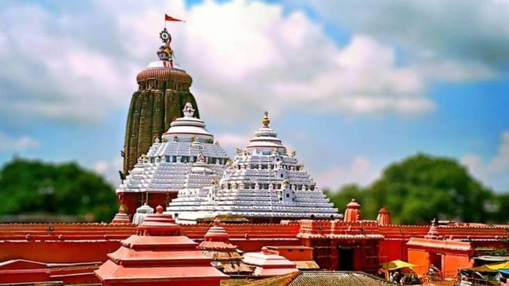
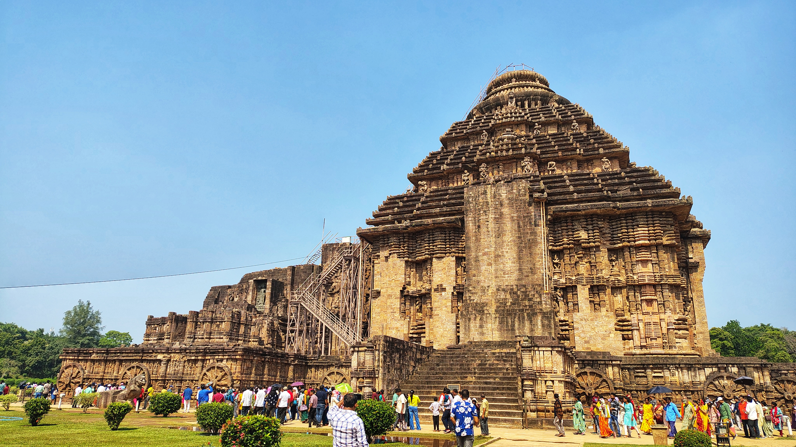
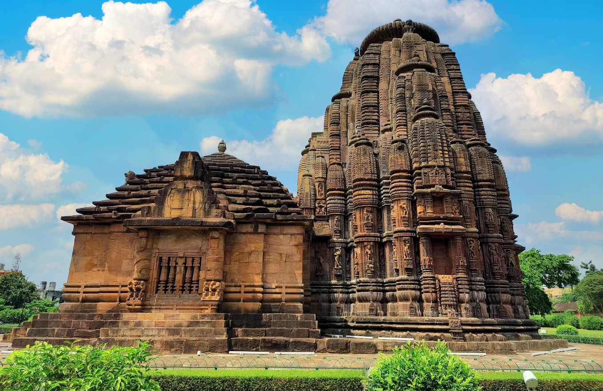

Image Gallery


.jpg)

A Spiritual Odyssey Through Time and Tradition
Nestled on the eastern shores of India, the Jagannath Temple in Puri, Odisha, stands as a monumental testament to India's rich spiritual and architectural heritage. Revered as one of the Char Dham pilgrimage sites, this sacred abode of Lord Jagannath draws millions of devotees and travelers seeking a blend of devotion, history, and culture.
The origins of the Jagannath Temple are steeped in legend and antiquity. According to temple chronicles, King Indradyumna of Avanti constructed the original temple dedicated to Lord Jagannath. However, the present structure was initiated by King Anantavarman Chodaganga of the Eastern Ganga dynasty in the 11th century CE.
The temple exemplifies the Nagara style of Kalinga architecture, towering at over 61 meters (200 feet). Its intricate carvings and towering spires are not just architectural feats but also embody the spiritual aspirations of the era.
Throughout history, the temple has withstood numerous invasions, including 18 by Muslim rulers from the 7th to the 19th centuries, who sought to plunder its treasures. Despite these challenges, the temple's sanctity and grandeur have remained intact.
Lord Jagannath, meaning "Lord of the Universe," is considered a form of Lord Vishnu. The temple's deities—Jagannath, his brother Balabhadra, and sister Subhadra—are central to the spiritual life in Odisha. Their annual journey during the Ratha Yatra symbolizes the divine's journey to meet devotees.
The Ratha Yatra, held annually in June or July, is the most prominent festival at the temple. During this event, the deities are taken out in massive wooden chariots, pulled by thousands of devotees, to the Gundicha Temple, symbolizing their visit to their aunt's home.
Spanning 42 days, the Chandan Yatra is the longest festival observed at the temple. It begins on Akshaya Tritiya and involves the procession of deities to the Narendra Tirtha tank, where they are bathed with sandalwood paste, symbolizing a cooling ritual for the deities.
Mahaprasad refers to the sanctified food offered to Lord Jagannath. Prepared in the temple's massive kitchen, known as Rosaghara, the food is cooked using traditional methods and is distributed to devotees. Remarkably, the food is believed to never spoil, regardless of the number of offerings.
By Air: The nearest airport is Biju Patnaik International Airport in Bhubaneswar, approximately 62 km from Puri.
By Train: Puri Junction is well-connected to major cities across India.
By Road: Puri is accessible via a network of state and national highways.
The ideal time to visit is during the Ratha Yatra festival, typically held in June or July, to witness the grandeur of the chariot procession. However, the temple remains open year-round for devotees.
Puri Beach: A serene beach offering a tranquil retreat.
Konark Sun Temple: A UNESCO World Heritage Site known for its stunning architecture.
Chilika Lake: Asia's largest brackish water lagoon, a haven for bird watchers.